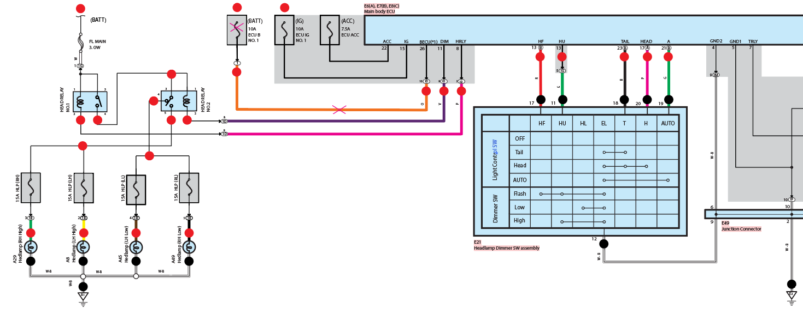

| BƯỚC 1: CHUẨN BỊ DỤNG CỤ |
- 1. Mô hình hệ thống điện thân xe
- 2. Đồng hồ VOM
- 3. Phần mềm tra cứu sơ đồ mạch điện
|
| BƯỚC 2: TRIỆU CHỨNG HƯ HỎNG |
- Dữ liệu trong hộp không được lưu trữ sau khi tắt khóa điện.
- TAIL: hoạt động bình thường.
- HEAD-LOW: hoạt động bình thường.
- HEAD-HIGH: hoạt động bình thường.
- AUTO: Đèn Tail không sáng.
|
| BƯỚC 3: XÁC ĐỊNH KHU VỰC NGHI NGỜ |
- 1. Đứt cầu chì 10A ECU B NO.1
- 2. Đứt dây nối giữa cầu chì 10A ECU B NO.1 với chân BECU (BCM)

|
| BƯỚC 4: ĐO KIỂM |
* Khóa điện bật ON
| Khu vực nghi ngờ |
Vị trí đo |
Ghi chú |
| Cầu chì 10A ECU B NO.1 |
1B & mass E2 |
Nếu giá trị điện áp tại điểm 1B & mass là 12v -> cầu chì vẫn còn sử dụng được |
| ID10 |
ID10 & Mass E2 |
Nếu giá trị điện áp 0V => không có nguồn đến |
|
| BƯỚC 5: XÁC ĐỊNH VỊ TRÍ HƯ HỎNG |
- ĐĐiện áp tại BECU là 0V thì đứt dây từ cầu chì 10A ECU B NO.1 đến chân số ID10.
|
| BƯỚC 6: KHẮC PHỤC HƯ HỎNG |
- Cầu chì ECU B No.1 (10A) hư, mất nguồn thường trực → Thay cầu chì đúng trị số, đảm bảo có 12V cấp liên tục cho BCM.
- Đứt/oxy hóa dây nguồn BATT–BECU đến BCM → Nối lại dây, vệ sinh điểm tiếp xúc.
- Giắc BCM lỏng, oxy hóa → Vệ sinh giắc, siết chặt chân cắm.
- Mass BCM kém → Làm sạch và siết chặt điểm mass.
- Cảm biến ánh sáng hư → Kiểm tra nguồn/tín hiệu, thay cảm biến nếu hỏng.
- BCM lỗi nhớ tạm → Reset BCM bằng cách ngắt cực âm ắc quy 10–15 phút.
- BCM hỏng mạch nhớ → Thay BCM khi nguồn, dây và mass đều tốt.
|